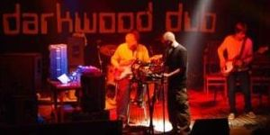

Beograd, 1994
Pre par dana posalje LaLara na listu ovaj link. Link je odmah postao triger i prisecanja na 1994 su pocela da se redjaju. Idemo redom...
Karter Supermirotvorac, Svepusecevicevici...
Naravno, nema sanse da se setite, jer je u pitanju potpuno interna fora, ali ono cega se verovatno (gora) vecina seca jeste koliko je lako bilo naci dzhidzhu u Beogradu, te 1994. Ali nije u pitanju bio samo kvantitet, o neee. Tek kasnije je pocela intenzivna trgovina na relaciji DB-OVK koja nam je donela smooor, a brojnim nenaviknutim klincima laganu demenciju. Anyway, 1994 je dzh bila... ne znam sta mi je smesno, izvinite.
AKADEMIJA, ETF, VaNaMa
Uglavnom, cetvrtak je bio najbolji dan za izlaske u Beogradu 1994. (a i inace). Ukoliko me secanje ne vara, cetvrkom je na Akademiji bilo potpuno urnebesno vece - Mjehur je sa ekipom (Slonce, pre svih...), bez zanrovskih ogranicenja, megamiks - Urban Dance Squad, Beastie Boys, RHCP, Faith No More, Public Enemy, Jorge Ben Jor (Umbabarauma), De La Soul... u mraku i decibelima velikog kluba. Tada je, valjda, dolazila najlepsa postava na Akademiju, neki lepi, normalni ljudi. Kapiram da je sada, velika vecina tih ljudi negde napolju. Na Akademiji smo tada cetvrtkom bili redovni Clark Kent i ja, u to vreme dvojac poznatiji pod imenom VaNaMa. Przili smo se na muziku, isli u Budimpestu na koncerte, pokusali da napravimo svoju i pritom da polozimo OET kod legendarnog profesora Kovacevica...lepi dani.
INDUSTRIJA
I dali OET, i uslov i upisali drugu. Druga godina, druga desavanja, drugi ljudi...druga muzika. Industrija je domacin ekipi sa radija B92, organizaciji koja je sebe nazvala Cosmic. Naravno, cetvrtkom. Pre izlaska, skupljanje na Zvezdari, Karter, piva... Iz nedelje u nedelju smo do ranih jutarnjih sati djuskali uz DJ Bozu Podunavca, DJ Gordana Paunovica - da li je tada radio i Vlada Janjic ne mogu da se setim da me ubijes. Tek, bilo nam je super, rejverima. Ekipa se ludo zabavljala, sve sa pistaljkama, koje ce zasijati punim sjajem neke dve godine kasnije. Tamo smo, muski deo ekipe, uzbudjeno komentarisali, takodje redovne, Zenasu i ZenuBoga, ultimativne dive dance podijuma.
Darkwood Dub
Nakon decembarskih izbora, 1993., situacija u zemlji, pa i Beogradu, je bila zaista ocajna. Vladavini ludila, koje je zhvatilo prostor nekdasnje Jugoslavije, nije se nazirao kraj. U mraku beogradskih klubova, opskurnih mesta kakvo je bilo stari Dolar, ili KST ponekad, osecaj klaustrofobije se pojacavao neumerenim konzumiranjem alkohola i raznoraznih opijata. Kao slika te atmosfere ostaje mi u secanju prizor iz KSTa sa jednog od prvih koncerata Darkwooda, mracna sreca - samo ptice iznad mene, spori, pa brzi vavilon, usamljeni hasisar - ekstaza bivsih brucosa . Paramparcad, kako savrsen album (aako neko ima u digitalnom formatu, please, please, please)! U narednih par godina cemo ih pratiti iz svirke u svirku, po klubovima, trgovima, sleperima, rasti sa njima, ali i bledeti.
Eto, to meni padne na pamet kada pomislim na 1994. Naravno, ima tu jos puno slika, mesaju se, preplicu, ali ih je, sve, nemoguce staviti u jedan post. Bila je to jedna citava godina, a ne kao ove sada, prolaze sa i u duhu 3u1 reklama. Cudan je bio i taj osecaj da si protiv sistema, ili tacnije, da je sistem protiv tebe, to je nekako bojilo 90te u Beogradu u jednu veoma posebnu boju. Hteli smo vise, drugacije, bolje. I usput se fenomenalno provodili na najcudnijem mestu, u Beogradu 1994.
Komentari
cika ljube, eh, odusevljenja...
 kiko | 17.11.06 20:46
kiko | 17.11.06 20:46
Iz internacionalne perspektive ispricano: "A new breed of rare nocturnal butterflies spread their wings and came out to play - many of whom were too young to know what came 'before'. Techno represented not only newfound freedoms but a spirit of tolerance and international communication - qualities that were in short supply in Belgrade that year. "There was so much euophoria - it was a fresh spirit', says clubber Ivana Vasic. "Everybody knew each other and we all had this huge emotion of belonging. The parties were so special, so happy. It was a paradise." To je iz knjige Guerrilla Radio, Matthew Collin. Vise o svemu uskoro
lalara | 18.11.06 16:26
Slusaj sinko, mozda sam odvec star, ali odlicno pamtim to vrijeme. Ako hoces moj savjet, nikad nemoj podcijeniti internet... neke urbane legende pripovijedaju da je VaNaMa imala jos po nekog clana... ;)
http://fotke.eunet.co.yu/gallery/Jahorina2005/049_G
YoW mc | 18.11.06 21:35
Pozdravi i ovacije za prvog, pravog, jedinog i neponovljivog YoW mc-a, gospodina clana - ("Clark Kent, ShookaDee, YoW mc VaNaMa to smo mi...")
Ova primedba za VaNaMa dvojac se zapravo odnosila na period s'kraja '93 i pocetak '94... kucamo na vrata zaboravljenih asova :)
kiko | 18.11.06 23:47
ja se zapravo secam matthewa
ivana v. | 23.05.07 06:02
 RSS feed
RSS feed
 sadržaji se objavljuju pod
sadržaji se objavljuju pod
psst, imam ja u digi formatu ;) uploadovacu ti negde